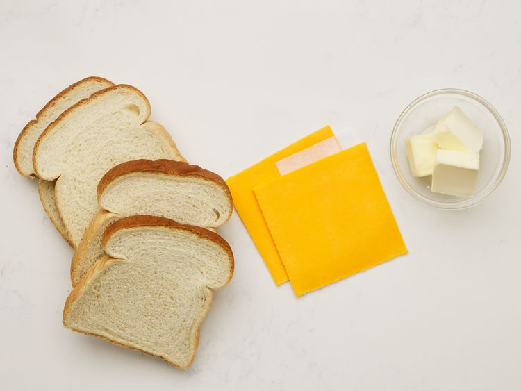
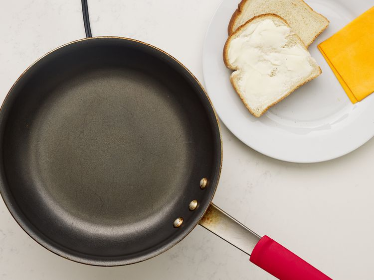
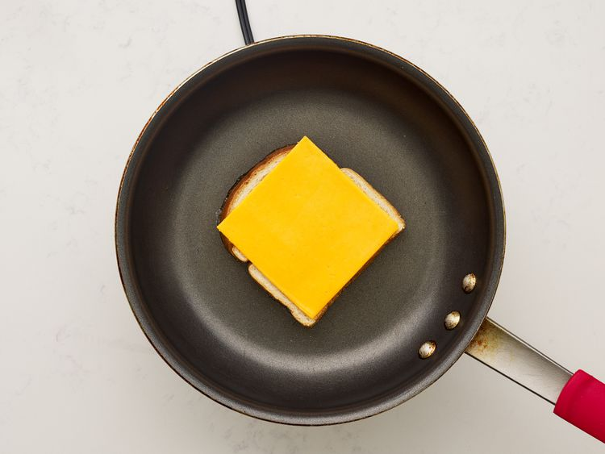
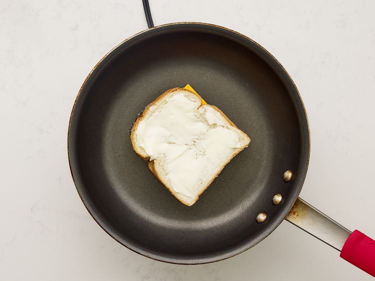
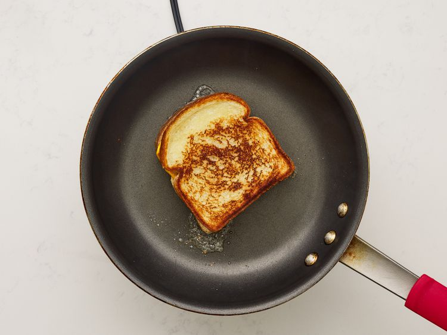
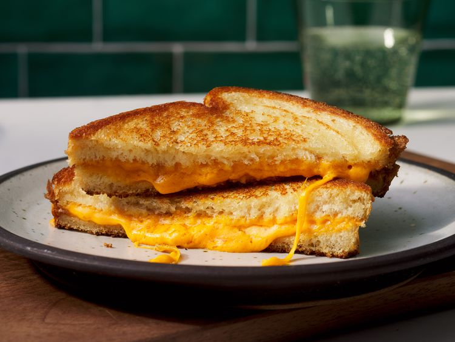

This recipe calls for sliced Cheddar, which is a wonderfully crowd-pleasing cheese. You can use sharp Cheddar, mild Cheddar, or a blend of both. Another classic choice is plain ol' sliced American cheese — it tastes nostalgic and gives you a gorgeous cheese pull.
This recipe calls for plain white sandwich bread. You could also use sourdough, brioche, or even ciabatta. You can really make grilled cheese with any type of bread you like, but you should make sure the loaf is sturdy enough to handle the heat. Thinly sliced, delicate breads will quickly fall apart.
Gather all ingredients.

Preheat a nonstick skillet over medium heat. Generously butter one side each bread slice.

Place 1 slice bread, butter-side down, in the hot skillet; top with 1 slice cheese.

Place 1 slice bread, butter-side up, on top cheese.

Cook until lightly browned on one side; flip and continue cooking until cheese is melted.

Repeat with remaining bread and cheese slices. Serve and enjoy!
